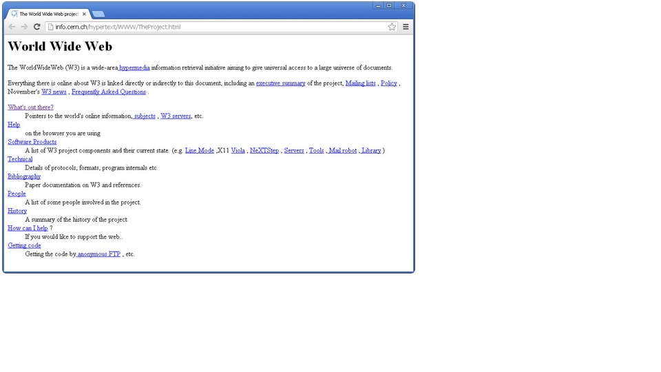

Эволюция Веб разработки
Появления
С момента появления первого в истории сайта (1991 г.) веб-дизайн прошел долгий путь. Этот первый ресурс — исключительно текстовый — положил начало тому, что позже обернулось подлинной цифровой революцией. Воспоминания о безумно мерцающих GIF-анимациях и в прямом смысле слова ослепительных цветах, использовавшихся когда-то для фона web-страниц, заставляют старожилов Интернета благодарить дизайнеров за то, что они далеко ушли от незатейливой эстетики первых сайтов.
Однако и в те времена было совершено несколько великих открытий в области веб-дизайна, не заслуживающих и по сию пору ничего, кроме благодарности и восхищения.
Отправимся в прошлое, чтобы оценить, как изменилась веб-графика за последние два десятилетия — к лучшему или к худшему.
Античность: как выглядели сайты 90-х годов
До конца 90-х годов прошлого века понятия «высокоскоростной» в применении к интернету просто-напросто не существовало. Было либо модемное соединение, либо никакого соединения. Поэтому первые сайты строились из расчета на совсем некосмическую скорость. Они состояли практически целиком из текстового контента, а того, что мы сегодня называем «дизайн-макетом», попросту не существовало. Более поздние версии HTML позволяли применять некоторые дизайнерские приемы, но они относились к самому начальному уровню: с помощью тегов можно было определять величину, цвет и местоположение заголовков, абзацев текста и ссылок, т. е. осуществлять самую примитивную верстку.
Визуальное представление информации — полноценная типографика, многоцветные изображения и графические элементы меню навигации — оставалось пока что делом пусть недалекого, но еще не наступившего будущего.
Вот так выглядел практически каждый сайт в 90-е годы:

Взгляд из 21 века:
Функция ранних сайтов сводилась к представлению только текстовой информации, однако один важный принцип дизайна дожил с тех «древних времен» до наших дней. Первые сайты были очень «легкими», оптимизированными под «черепашью скорость» тогдашнего Интернета, о которой мы уже упоминали. Все конструктивные решения, предназначенные для уменьшения времени загрузки веб-страниц, появились уже тогда, и, к сожалению, современные разработчики не всегда используют их, полагаясь на современные высокие скорости соединения, а не на кропотливую оптимизацию страниц.
Да, сегодняшние интернет-технологии позволяют новейшим браузерам обрабатывать сложнейшие мультимедийные веб-ресурсы, но все равно еще существуют ограничения, с которыми необходимо считаться. Большие мультимедийные файлы и тяжелый графический дизайн могут способствовать высоким показателям отказов (Bounce Rate) только потому, что веб-страница загружается не так быстро, как хотелось бы пользователям. Помните, что скорость загрузки до сих пор является одним из важнейших критериев качества сайта/лендинга, и используйте старый-добрый принцип «Делай проще!» (Keep it simple, stupid!; K.I.S.S.).
Средневековье
Подлинной чумой «средневекового» веб-дизайна были онлайн-конструкторы сайтов и GIF-файлы, используемые как «прокладки»/спейсеры для организации структуры веб-страницы. Тем не менее, к середине 90-х годов веб-дизайн развился как с точки зрения архитектуры сайтостроения, так и с точки зрения визуального представления контента. Для его оформления дизайнеры стали использовать табличную верстку, что обеспечивало больше возможностей для верстки страниц хотя бы в минимальном соответствии с правилами классической типографии и позволяло применять творческий подход к созданию веб-страниц.
Сайты еще по большей части состояли из текста, но этот текст делился на столбцы, строки, параграфы, навигационные элементы. Быстро росла популярность графических элементов: именно тогда в арсенале веб-дизайнеров появились счетчики посещений страниц, анимированные тексты и различные GIF-элементы.
Глядя из 21 века:
С точки зрения сегодняшнего дня у тогдашней табличной верстки множество недочетов: сложность разметки, медленная загрузка страницы, визуальное несоответствие отображений макета страницы в разных браузерах и т. д. Но этот метод был очень важен для эволюции веб-дизайна: он положил начало упорядоченному структурированию страниц. Каждый элемент находил свое место на странице, и дизайнеры могли выбрать наилучший способ подачи информации пользователю.
Сегодня структура, или «анатомия» сайта/лендинга критически важна, когда речь идет о навигации, текстовом контенте, CTA-элементах. От визуальной иерархии элементов зависит то, как пользователь будет (и будет ли вообще!) взаимодействовать с вашей целевой страницей/сайтом. Возможно, эти соображения не стояли во главе угла во времена «средневековья» веб-дизайна, но сегодня они безусловно верны и важны.
Сегодня
Сегодня, более чем через два десятилетия после публикации первого сайта, веб-дизайн прочно зарекомендовал себя как незаменимый компонент всякой удачной маркетинговой стратегии. С эстетической точки зрения актуальный дизайн характеризуется как крайне минималистичный, подчеркнуто «плоский» (прощайте, 3D-кнопки!), использующий комбинированную типографику и большие фоновые изображения.
Взрыв популярности мобильного интернета стал еще одним важным фактором, влияющим на эволюцию современного веб-дизайна. На наших глазах происходит изменение классической архитектуры online ресурса для адаптации ее к небольшим дисплеям «книжной» ориентации (как у смартфонов).
Однако одно остается неизменным уже 20 с лишним лет: каждый элемент дизайна создается для того, чтобы наиболее эффективно эффектно донести контент до пользователя. Именно в нашу эпоху графика стала по-настоящему доступным, удобным, максимально адаптированным под запросы целевой аудитории способом внедрения офера в рамках выбранной маркетинговой стратегии..